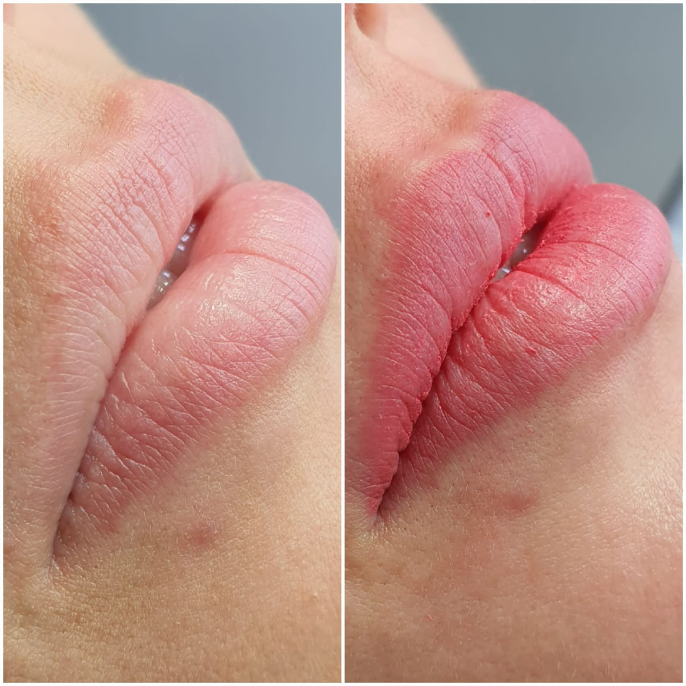
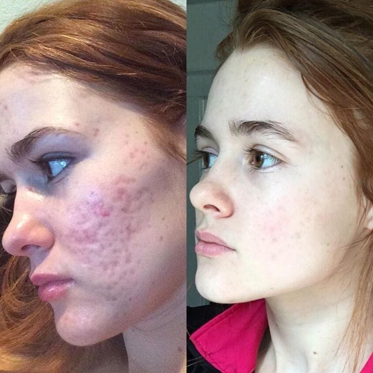
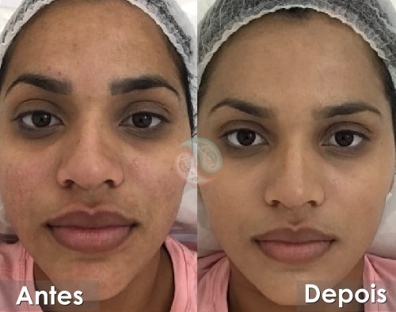

Alongamento de Cílios
Cílios mais longos e volumosos sem esforço
O alongamento de cílios é um procedimento estético que consiste na aplicação de cílios postiços fio a fio nos cílios naturais. O resultado é um olhar mais marcante e expressivo, sem a necessidade de maquiagem.
O procedimento é realizado por profissionais qualificados e experientes, que utilizam materiais de alta qualidade. O alongamento de cílios dura cerca de 30 dias, mas pode variar de acordo com o tipo de cílios naturais e os cuidados de manutenção.
Vantagens do alongamento de cílios:
- Cílios mais longos e volumosos
- Olhos mais expressivos
- Sem necessidade de maquiagem
- Durabilidade de até 30 dias
Entre em contato conosco e agende uma avaliação gratuita!
Micropigmentação

Sobrancelhas, lábios e olhos perfeitos
A micropigmentação é um procedimento estético que visa melhorar a aparência de sobrancelhas, lábios e olhos. O procedimento é realizado com uma agulha que deposita pigmentos na pele, criando um efeito natural e duradouro.
A micropigmentação de sobrancelhas é ideal para quem deseja corrigir falhas, definir o formato ou preencher as falhas. A micropigmentação de lábios é ideal para quem deseja aumentar o volume, corrigir assimetrias ou preencher as falhas. A micropigmentação de olhos é ideal para quem deseja delinear ou aumentar o tamanho dos olhos.
O procedimento é realizado por profissionais qualificados e experientes, que utilizam materiais de alta qualidade. A micropigmentação dura cerca de 2 anos, mas pode variar de acordo com o tipo de pele e os cuidados de manutenção.
Vantagens da micropigmentação:
- Aparência natural e duradoura
- Corrige falhas e imperfeições
- Efeito imediato
Entre em contato conosco e agende uma avaliação gratuita!
Microagulhamento

O microagulhamento é um procedimento estético que consiste na aplicação de microagulhas na pele. As microagulhas causam microlesões na pele, que estimulam a produção de colágeno e elastina, resultando em uma pele mais jovem e renovada.
O microagulhamento é indicado para pessoas com pele madura, com cicatrizes de acne ou estrias, ou com manchas na pele.
Vantagens do microagulhamento:
- Rejuvenescimento da pele
- Redução da aparência de cicatrizes
- Redução da aparência de manchas
- Melhoria da textura da pele
Entre em contato conosco e agende uma avaliação gratuita!
Limpeza de Pele

Renove sua pele com a Limpeza Profunda
A limpeza de pele é um procedimento estético que remove impurezas, células mortas e cravos, promovendo uma pele mais saudável e revitalizada.
O procedimento é realizado por profissionais qualificados, utilizando produtos específicos para cada tipo de pele. A limpeza de pele é indicada para todos os tipos de pele e pode ser realizada periodicamente para manter a saúde e o aspecto rejuvenescido da pele.
Vantagens da limpeza de pele:
- Remoção de impurezas e cravos
- Revitalização da pele
- Pele mais saudável
Entre em contato conosco e agende uma avaliação gratuita!
Depilação a Cera
Pele lisinha e sem pelos
A depilação a cera é um procedimento estético que remove os pelos da pele. O procedimento é realizado com cera quente ou fria, que gruda nos pelos e os arranca da raiz.
A depilação a cera é uma ótima opção para quem deseja uma pele lisinha e sem pelos por mais tempo. O procedimento é realizado por profissionais qualificados e experientes, que utilizam materiais de alta qualidade. A depilação a cera dura cerca de 30 dias, mas pode variar de acordo com o tipo de pelo e os cuidados de manutenção.
Vantagens da depilação a cera:
- Pele lisinha por mais tempo
- Remoção completa dos pelos
- Efeito duradouro
Entre em contato conosco e agende uma avaliação gratuita!